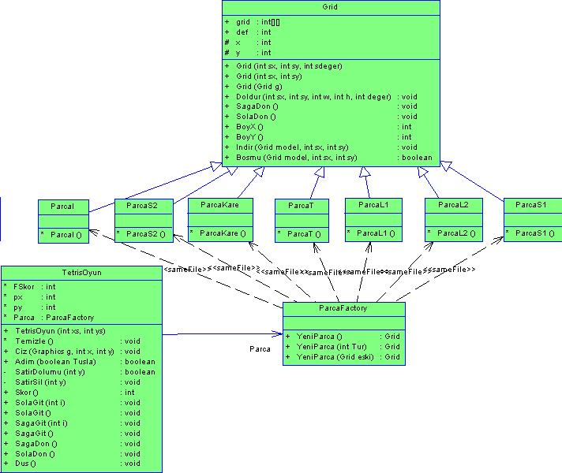
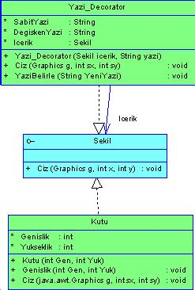
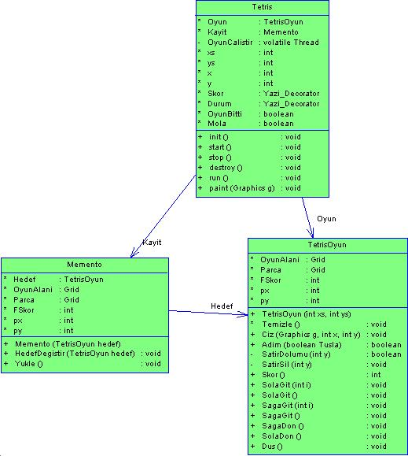

Parçayý hareket ettirmek için ok tuþlarýný kullanýn. Ayrýca Z ve X tuþlarýný parçayý her iki yönde çevirmek için kullanabilirsiniz. Boþluk çubuðu parçayý aþaðý düþürür. R ile oyun baþtan baþlatýlýr. P ile oyun durdurulur.Bunun dýþýnda oyun kaydetme ve en son kaydedileni yükleme özelliðini kullanmak içinK (kaydet) ve Y(yükle) tuþlarýný kullanýnýz.
Design Patterns:
Factory pattern
Bu kalýbý uygulamak için akla ilk gelen alan parçalarýn oluþturulmasýydý. Bu amaçla parçalar oluþturulurken ParcaFactory sýnýfýný kullandým. Bu sýnýf Grid isimli temel sýnýftan türeyen parçalardan hangisinin oluþturulacaðý ile ilgileniyor ve bunu kullanan TetrisOyun sýnýfýnýn bu iþle ilgilenmemesini saðlýyordu. Sýnýflarý ve iliþkileri bir þemayla gösterirsek:

Burada ParcaFactory sýnýfýnýn YeniParca() fonksiyonu kullanýlarak istenen özel bir parça veya rasgele bir parça veya hazýr bir parçanýn kopyasý oluþturulabiliyor.Burada Factory kullanýmý ile hangi parçanýn yaratýldýðý bilgisi yerelleþtirilmiþ oldu ve TetrisOyun sýnýfý hangi parçanýn yaratýlacaðýyla ilgilenmemiþ oldu.
Decorator pattern
Programda kullanýlan ve kullanýcý arayüzüne sahip olan bütün sýnýflar Sekil sýnýfýndan türetilmektedir. Benim Decorator kalýbý için yaptýðým örnek sýnýf Yazi_Decorator sýnýfýdýr. Bu sýnýfýn kullaným amacý yine görsel olup, parametre olarak aldýðý Sekil sýnýfýndan türetilmiþ herhangi bir sýnýfýn üzerine yazý yazabilmesidir. Bu sýnýfý kullanarak türetilen herhangi bir sýnýfýn üzerinde geçici bir yazý yazabiliriz. Yazi_Decorator sýnýfý verilen sýnýfýn çizim alanýnýn ortasýna istenilen bir mesajý yazabilmektedir. Bunu ata sýnýf olan Ciz() fonksiyonunu yeniden tanýmlayarak yapmaktadýr. Önce hedef sýnýfýn Ciz fonksiyonunu çaðýrmakta ve daha sonra yazýlacak mesajý yazmaktadýr. Bu özelliði örneðin oyun alanýnýn ortasýna DURAKLATILDI veya OYUN BÝTTÝ gibi mesajlar yazmak için veya herhangi bir düðme veya kutunun üzerine GEÇERSÝZ veya KULLANILAMAZ gibi mesajlar yazmak için kullanabiliriz. Oyun içerisinde bu sýnýf, appletin alt bölgesindeki kutularýn içerisine durum mesajlarýný yazmak için kullandým. Þemasý:

Memento pattern
Oyun esnasýnda herhangi bir anda (oyunun bitmiþ olduðu durumlar hariç) oyun kaydedilerek istenilen herhangi bir anda oyun en son kaydedilen haliyle tekrar yüklenebilmektedir. Bu özelliði ekleyebilmek için Memento kullandým.

Program içerisinde oyun hakkýndaki bütün bilgiler (inen parçanýn türü, koordinatlarý, skor, oyunalanýndaki düþmüþ parçalar) TetrisOyun sýnýfýnda tutulmaktadýr. Dolayýsiyle sadece bu sýnýfýn kaydedilmesi yeterli olacaktýr. Onun için yazdýðým Memento sýnýfý hedef sýnýf olarak TetrisOyun sýnýfýný almakta ve ayrýca içindeki bilgileri de kaydetmektedir. Memento sýnýfý TetrisOyun sýnýfý ile ayný kaynak kod kütüðü içerisinde bulunduðundan dolayý onun içerisindeki deðiþkenlere eriþebilmektedir. Burada Originator, TetrisOyun sýnýfý, Memento ayný isimli Memento sýnýfý ve Caretaker ise Tetris sýnýfýnýn kendisidir.Bu kullaným sayesinde enkapsülasyon bozulmamýþ olur ve Tetris sýnýfý bu iþle ilgilenmeden oyun kaydedilmesi ve geri yüklenmesi yapýlmýþ olur.